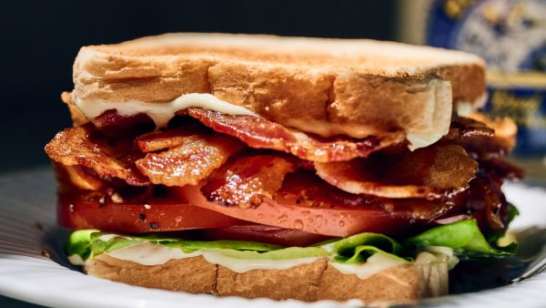

Bacon, Lettuce, and Tomato

Description
As a kid I HATED 1. Lettuce and 2. Tomatoes. I LOVED Bacon. As I grew older
I grew to like vegetables and would eat lettuce and I tolerated tomatoes. That is,
until I found Duke's Mayonnaise. Once Duke's came into my life, I eat a BLT for dinner
nearly every week.
Ingredients
- 1 Head of Lettuce, rinsed
- 1 Tomato, sliced
- 1 lb of Bacon
- Duke's Mayonnaise
- Bread of your choice
- Salt
- Pepper
Steps
- Cook bacon to your desired doneness, place on plate with paper towel to drain grease
- Toast bread to your liking
- Slather a healthy dose of Duke's mayonnaise on one...or both slices of Toast
- Layer 1-2 leaves of lettuce, 1-2 slices of tomatoe, and as much bacon as you like on the toast
- ENJOY
- Make Another